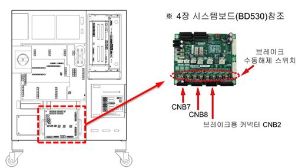
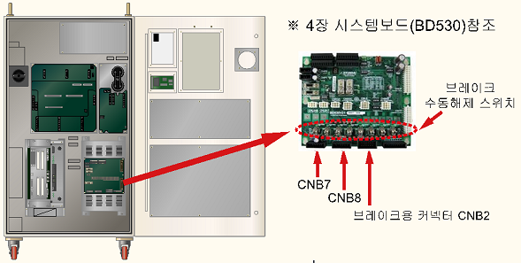
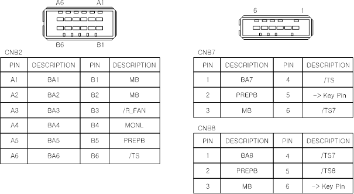
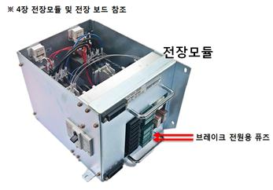
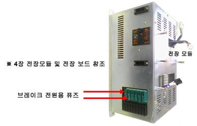
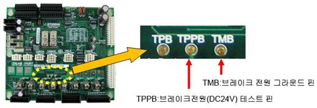

경고(Warning)
브레이크 해제와 동시에 로봇축이 낙하할 가능성이 있으므로 주의하십시오.
기존 에러코드: E0119 (○축) 모터 과부하
1.1.78.1. 개요
모터 또는 구동장치가 무리하게 동작되고 있습니다. 모터 또는 구동장치가 설정치 보다 무리하게 동작하게 되면, 서보보드는 에러를 감지하고 로봇을 정지시킵니다.
이 에러는 과부하 상태이면서 브레이크전압 저하가 검지되었을 때 발생합니다.
1.1.78.2. 원인 및 점검방법
|
(1) 브레이크 해제가 정상적으로 작동되는지 확인하십시오. n 개별 축 브레이크 해제 이상 점검 n 브레이크용 전원이상 점검.
|
(1) 브레이크 해제가 정상적으로 작동되는지 확인하십시오.
해당 축 브레이크의 해제기능에 문제가 있거나 브레이크 해제전압의 이상일 수 있습니다.
n 개별 축 브레이크 해제 이상 점검
모터전원을 제거한 후(모터OFF) 브레이크 수동스위치를 사용하여 해당 축의 브레이크가 해제되는지 확인하십시오. 브레이크 해제시 모터에서 나는 소리로 확인할 수 있습니다.
|
경고(Warning) 브레이크 해제와 동시에 로봇축이 낙하할 가능성이 있으므로 주의하십시오. |

(a) Hi5a-S 제어기

(b) Hi5a-N 제어기
그림 1.210 브레이크 수동해제 스위치의 위치
해당 축의 브레이크가 해제되지 않는다면 시스템보드의 브레이크 해제전압 출력상태를 확인해야 합니다. 브레이크 배선(CNB2, CNB7, CNB8 커넥터)을 제거하고 수동브레이크 스위치를 사용하여 브레이크전압을 출력하십시오. CNB2 또는 CNB7, CNB8커넥터에서 해당 축의 브레이크 전압이 20V이상으로 출력되는지 측정하십시오. 20V이하의 전압으로 출력되는 축이 있다면 시스템보드(BD530)의 고장이므로 교체하십시오.

그림 1.211 CNB2, CNB7 커넥터의 핀배치
n 브레이크용 전원이상 점검.
“E0012 브레이크 전원이상”이라는 메시지가 같이 발생하였다면 브레이크 전원장치에 이상이 있는 것입니다. TP에서 “『[F1]: 서비스』 → 『1: 모니터링』 → 『2: 입출력 신호』 → 『1: 전용 입력신호』” 창을 열어보면 “과부하(Brake전원)” 항목이 있습니다. 이것이 노란색으로 표시되어 있다면 전장모듈의 브레이크 전원용 퓨즈가 끊어진 것입니다. 해당 퓨즈를 교체하십시오.

(a) Hi5a-S 제어기

(b) Hi5a-N 제어기
그림 1.212 전장모듈
퓨즈도 정상이라고면 시스템보드에서 브레이크 전원(DC24V)을 측정하십시오. 보드의 중앙부근에 3개의 테스트핀이 배치되어 있습니다. 이 중 TMB를 기준단자로 하여 TPPB단자의 값이 DC20V이상이 되어야 정상입니다. 만약 20V미만이라면 브레이크 전원을 생성하는 전원장치의 이상입니다. 전장모듈을 교체하십시오.

그림 1.213 브레이크 전원 테스트핀